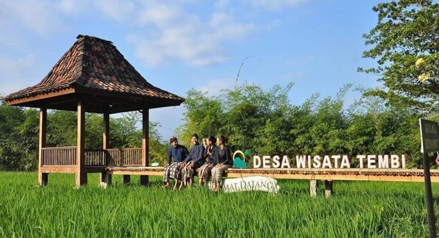

Apa itu DeWee ?
Keberadaan desa wisata saat ini memiliki daya pikat yang baik. Bukan saja karena Indonesia terdiri dari beragam tradisi dan kebudayaan, namun kekayaan alam yang terbentang antara desa satu dengan desa yang lain memiliki keunikan dan kekhasan tersendiri. Oleh karena itu, prinsip utama yang diterapkan oleh desa adalah bagaimana nilai-nilai luhur baik tradisi maupun kebudayaan yang melekat dan sudah menjadi karakter harus tetap terlindungi. Istilah saat ini, konsep yang dapat dikembangkan tersebut adalah konservasi lingkungan supaya habitat di dalamnya tidak punah (prinsip ekowisata).
Berdasarkan filosofi Sunda, kata Bandung juga berasal dari kalimat Nga-Bandung-an Banda Indung, yang merupakan kalimat sakral dan luhur karena mengandung nilai ajaran Sunda. Nga-Bandung-an artinya menyaksikan atau bersaksi. Banda adalah segala sesuatu yang berada di alam hidup yaitu di bumi dan atmosfer, baik makhluk hidup maupun benda mati. Sinonim dari banda adalah harta. Indung berarti Ibu atau Bumi, disebut juga sebagai Ibu Pertiwi tempat Banda berada.
Pengembangan desa wisata tidak bisa dilakukan secara instan, hanya dengan membuat sebuah objek wisata atau menyelenggarakan event wisata di desa. Lebih daripada itu, konsep pengembangan desa wisata harus memenuhi sejumlah unsur penting yang tidak lepas dari peran komunitas atau masyarakat sebagai pelaku penting di dalamnya.